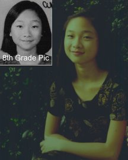

|  | (Yes..
this one's my sister... =) Age: 13 (11/21/85) Birthplace: San Francisco, California E-mail: magestry@flashmail.com Hobbies: Reading, swimming, talking, laughing, and going on the computer. (being annoyed...) |
Favorites:
Quote: "The Lord is righteous in all his
ways and loving toward all he has made." -Psalms 145:17 and
"If girls are chicks, then guys must be roosters." (cocka-doodle-doo! BWAHAHAHAHAAA...
=)
Song: God must have spent a lil more time (yes... she plays it over and over
and over and over and over...) (My fav song too...you rule Sista!) and The Wind Beneath My Wings
Movie: The Matrix, A Bug's Life, A Walk in the
Clouds (hmm... two
Keanu Reeves movies... hmm... =D)
Book: The Letter
School subject: Science
Cartoon character: The peas in Veggietales
(heheheheeh....
Comic character: Garfield
Overly-used word, phrase, or whatever: "like"
Funniest Moment: When I saw Matt Ochs and Matt Carlson come inside my house... (oh boy...) (she just said that so me and Ochs would have to talk to her about saying that!! She is desperate to talk to people!) (I would have figured this would be your scariest moment) (that was hilarious???)
Peeve: "That a guy will break into my house and shoot me." (that'd be me =) hehe, j/k =) (...and brainiac geniuses who get straight 100's on their report cards (guess who this is?) ...haha)
Favorite event/moment: "When I was younger and went to Disney World."
Self description: Well, I'm a really big pessimist, (OH YA!) and Oliver calls me the "fuss factory", (hehe =) sooooo... haha! I'm really annoying sometimes and I'm really short. =) I don't have much self-confidence, but I've got a pretty good sense of humor (eh...) ... sometimes. Hehe. I get depressed a lot... but right now I'm in a HAPPY mood! Lucky for Oliver. :)~ Anyway........ um...... SMILE! :)~ (Oh, ok, that day I was kind of not in a good mood, so I wrote mostly negative things. Right now, I'm in a HAPPY mood, so I'll write good things. Hopefully....hahahaha. Anyway, I like to sing, although I'm not good at it, but I like to draw and I'm good at that. =) (Yes!!! I always used to tell you how good you drew and you denied it! She's very good, people.) Ask Oliver! (why me? yeah... it runs in the family... at least dad's side =) Although... he might say I'm a bad drawer but I am not! I draw pretty good! Anyway...... I love to read and I like writing. Ummmm, I have shoulder-length black hair and brown eyes (Noo... she's just chinese with blonde hair and blue eyes...*sigh*) (duh) for those people who haven't seen me. I don't look like Oliver at all, Oriana looks almost exactly like me when I was her age. Ummm... lala... My nickname 3'11" down there was when I was in 4th grade. I was actually 3'11" in 4th grade! Don't laugh at me! Argh! Anyway, Now, I'm about 4'11", so I grew a foot in FOUR years... wow... haha! At least I grew. Anyway, I can tell Oliver is getting impatient to get back on his beloved computer so, I better go now. :) BYE!!!!!!!!!!!!!!!!!!) (Thank you!!! That last one was sooo negative! I like this description much better. By the way... some chinese people ARE blonde! Like Oliver.) (As you can tell, Sarah's blonde... it takes a blonde to mix up black hair with blonde hair,hehe =)
Nicknames: Livi, Liv,
Tic-Tac, Tic-Tac-Toe, Shrimp, Shorty, 3'11", Oliverias,
O-Liver, Liver, Livia, Bolivia, Olivera, I'M NOT NAMING ANYMORE,
PEOPLE!!!!!!!!!!!! (...and
Olivia Newton John... and Carlson & Minix have been calling
me Chinchilla (Chinilla from Minix) *sigh*)
Things I call Oliver: GawGaw (big brother in cantonese...
spelled phonetically of course),
Stupid, Idiot, Computer hogger, Computer nerd, "I hate
you!!" (Hey!...)